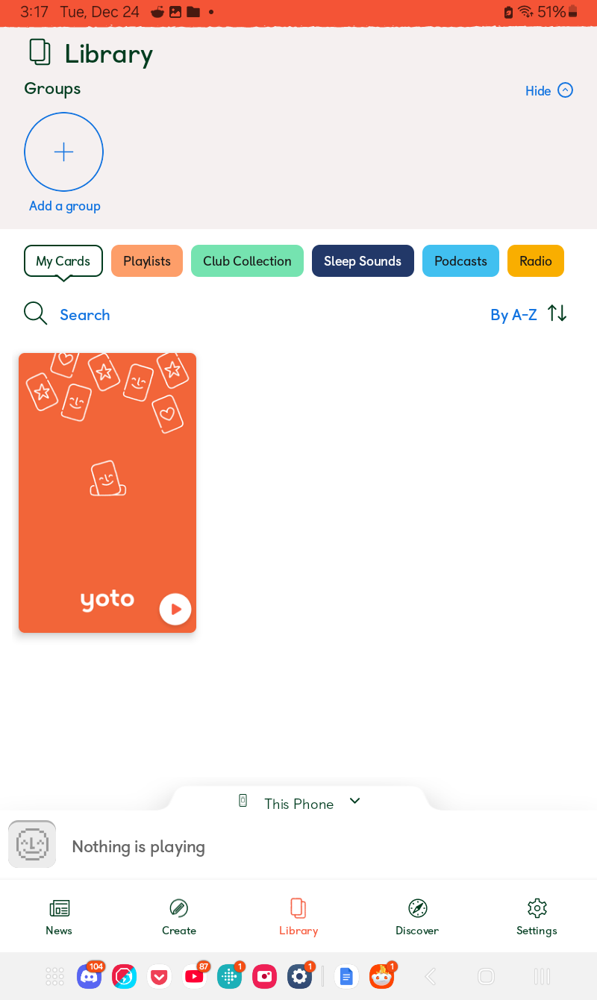

Yoto Basics
Author: u/playchime
Things You Should Know
Free MYO Card + Instructions:
- The orange instructional card that comes with your Yoto is also usable as a MYO card. However, you need to make sure the instructions have been saved to your card collection in your app before overwriting it, or you’ll lose the instructions forever!
- If the instruction card is in your library, it looks like this: 
Cards:
- Yoto cards can be inserted in any orientation! Upside down and back to front is also fine!
- Yoto cards cannot be hole-punched! Because they can be inserted in any way, Yoto cards have electronics running around the whole border of the card. You cannot hole-punch them to put them on keyrings without damaging these electronics unless you’re extremely careful. Even then, hole-punched cards will lose their resale value. You can see where the electronics are in the cards (can vary per card) by shining a bright light through the plastic, if you really want to have a look.
- You can quickly tell if your player is connected to wifi or not by its clock face! If your clock face has red numbers, it’s connected to wifi. If they’re white, it’s not connected to wifi or has lost its connection.
Alarms:
- Gen2, Gen 3: If you have the large Yoto, it will play any alarms you've set even when it's turned off. Great if you want to make sure the kids are up, bad if you don't want to wake the baby. Make sure if you've set an alarm and no longer want to hear it, you disable it in the app.
- Mini: The Yoto Mini will only play alarms when it's turned on. So if you want to use it as an alarm clock for the kids, you’ll need to leave it powered on at night.
What Does That Button Do?
Yoto already has a button guide over here.
General:
- Power button, long press - turn player on or off
- Power button, tap - pause content (if there is audio playing)/show battery charge level (if there is no audio playing).
- Left knob, twist - volume up and down
- Left knob, press - go to previous track
- The right knob is unique in that it's functions differ depending on whether a card is inserted or not:
With card inserted:
- Right knob, twist - seek/scroll between tracks. You must follow this action with a button press to actually change the track.
- Right knob, press - go to next track/selected track if scrolling
Without card inserted:
- Right knob single/first press - shortcut A, by default this is Yoto Daily.
- Right knob, double/second press - shortcut B, by default this is Yoto Radio in the daytime and Yoto Sleep Radio at night.
You can change the functions of the shortcuts by opening your app, going to Settings using the menu at the bottom of the screen, selecting your Yoto player, and scrolling down until you see the “Right Button Shortcuts” options at the bottom of both the Daytime and Nighttime settings menus. They can be set differently for day and night, so make sure you pay attention to which one you're changing!
How Do Yoto Cards work?
Contrary to how you might think of them based on other formats like cassette or CD, Yoto cards do not actually hold any audio content. The only thing on a Yoto card is an instruction to the player of what content you have stored in its internal memory (or on the cloud if it hasn’t yet been downloaded) that you want it to play. As such, when you first get a new Yoto card, it will require wifi access to become more than a decorative bit of plastic. When you first play a new card, it will use wifi to “stream” the content to the player. This is just playing it off Yoto’s servers, the same as if you were listening to Spotify or YouTube, and is wifi-dependent (and also has some lag). If set up correctly, future plays will be from the internal storage of the Yoto, which is not wifi-dependent and has no lag. We’ll cover getting Yoto cards downloaded to the internal memory in just a moment.
Does Yoto Work Without Wifi?
Yes! But only if it's set up correctly (again, we will cover this in a moment). Some features of Yoto do not work without wifi however.
Content that works without wifi (when set up correctly):
- Purchased Yoto cards
- MYO playlists
- Yoto Daily, if the episode had a chance to update and download before the wifi access was lost*
Content that does not work without wifi:
- Radio, including Yoto Radio and Yoto Sleep Radio
- Podcasts
- Casting content from a mobile phone
*I’m still testing this, but I think it's the case. I’ve been successfully able to play the episodes with my wifi turned off a couple times now.
Downloading Yoto Cards
Also titled setting it up correctly for future use without wifi. To download a Yoto card to the internal memory, you need to follow this process:
- Turn the Yoto player on, and make sure it is connected to wifi (the clock face displays red numbers if the player is connected to wifi–they’ll be white if it’s not).
- Place the card you want to download into the Yoto player, and let it play for a few seconds. If you have multiple cards you'd like to download, do this with each of them.
- Remove all cards and make sure no audio content is playing on the Yoto. You want it to be on its home screen of the clock face/sun or moon.
- While still connected to wifi, plug the player in to charge and leave it on for a bit.
- You can check if your card(s) are downloading (or if they've finished) by opening up your Yoto app, going to settings, selecting your player, and choosing “Audio Download Status”
Both the Yoto Gen 3 and the Yoto Mini 2024 have 32GB of storage space to store downloaded content.